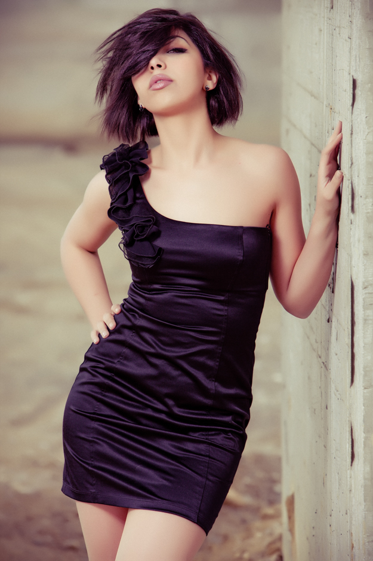

|
TutorialeCreeaza o legatura cu subiectul tau Foloseste Distante Focale Mari "Trage" Wide Incearca obiectivele de 50mm Alb Negru Invata tot ce poti despre lumina Nu iti fie frica sa folosesti blitzul Invata setarile camerei foto Cauta naturalete Implica cadre in miscare |
|
|---|---|
Creeaza o legatura cu subiectul tauCu siguranta cel mai important lucru dintre toate Daca stapanesti acest aspect esti pe drumul cel bun, mai mult ca sigur te indrepti catre a fi un fotograf profesionist. Daca esti la inceput, emotiile binenteles vor fi la locul lor asta inseamna ca iti va fi mai greu pana vei stapani acest aspect, insa ce te poate ajuta foarte mult este sa lucrezi cu un subiect care se simte bine in fata camerei foto. Treaba ta ca si fotograf este aceea de a face subiectul sa se simta in mediul lui, sa se relaxeze, binenteles buna-dispozitie trebuie sa nu lipseasca de la o sedinta foto. Daca cauti un subiect (model) prietena, prietenul sunt excelenti pentru inceput. |

|